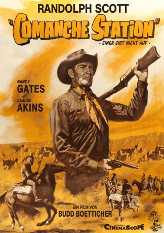

#9793 Einer gibt nicht auf
Alternativ: Comanche Station
 
 IMDB-Wertung: 7.1 / 10
IMDB-Wertung: 7.1 / 10  Metascore: 0
Metascore: 0 
Jeff Cody ist ein ehemaliger Bürgerkriegs-Offizier, dessen Frau von Indianern entführt wird. Er macht sich auf die Suche nach ihr, heftet sich an die Fersen der Comanchen und findet in deren Lager eine andere weiße Frau. Diese befreit er und bringt sie zu ihrem blinden Ehemann zurück. Unterwegs gerät er an drei Banditen, die Cody die Belohnung des Ehemannes abnehmen wollen.
Jahr: 1960
Dauer: 73 Minuten
FSK: 12
Land: USA Studio: Columbia Pictures CorporationTonspuren: DD2.0 - ,
Untertitel: Deutsch,
Auflösung: 1080p (1920x816) Größe: 5591 MB
Genre: Drama, Western
Regisseur: Budd Boetticher
Drehbuch: Burt Kennedy
Soundtrack: Mischa Bakaleinikoff
Darsteller:
 Randolph Scott als Jefferson Cody
Randolph Scott als Jefferson Cody- Nancy Gates als Nancy Lowe
 Claude Akins als Ben Lane
Claude Akins als Ben Lane Skip Homeier als Frank
Skip Homeier als Frank- Richard Rust als Dobie
- Rand Brooks als Station Man
- Dyke Johnson als John Lowe
- P. Holland als Lowe Boy (uncredited)
- Foster Hood als Comanche Lance Bearer (uncredited)
- Joe Molina als Comanche Chief (uncredited)
- Vince St. Cyr als Warrior (uncredited)
Datei: X:\NEU\Einer gibt nicht auf (1960, FSK12, 1920x816).mkv seit 28.10.2018
 Es gibt insgesamt 187 Filme in der Gruppe 'NEU'
Es gibt insgesamt 187 Filme in der Gruppe 'NEU'